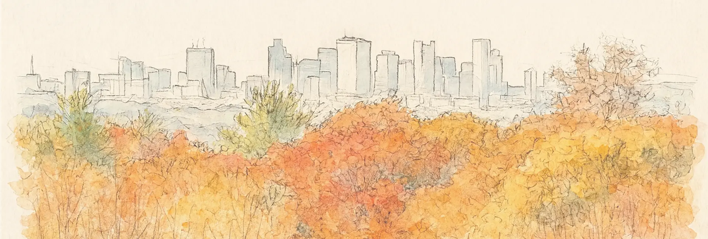
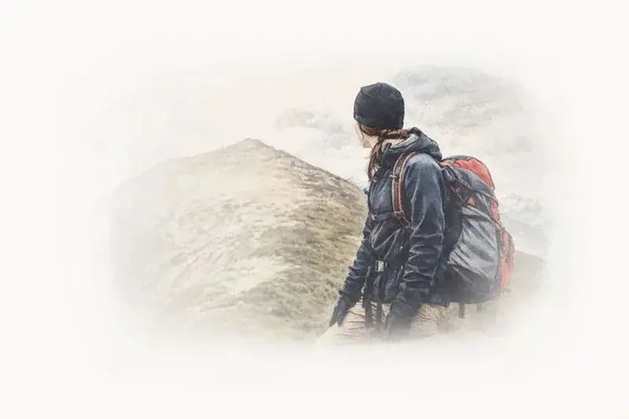
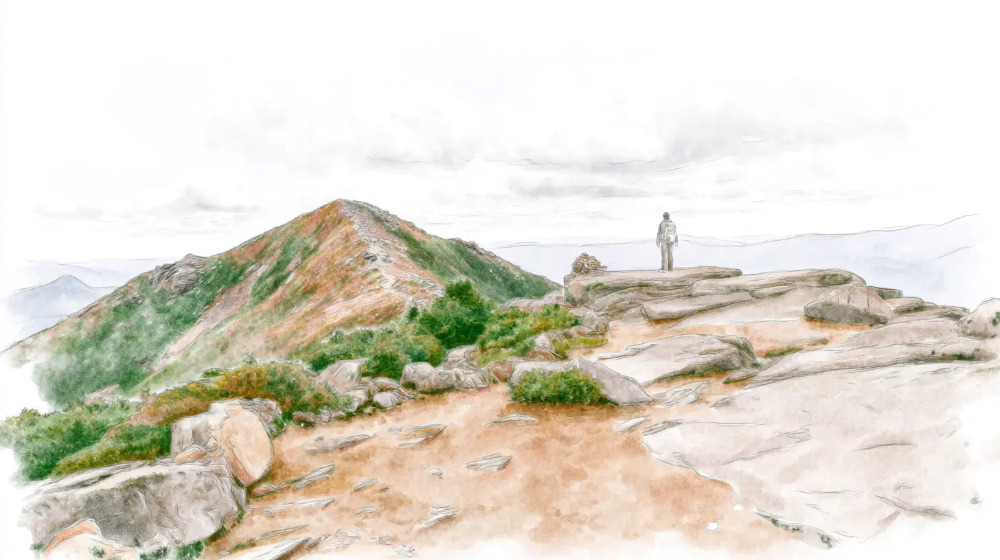

Content strategy and governance
Audits, information architecture, migrations, and plain-language content, with clear ownership so it stays organized after launch.
Content Strategy · Storytelling · Accessible Web
I’ve worked within organizations like yours. I know how to bring the people and purpose behind your work to life online.

How I can help
Most teams don't come to me asking for "content strategy." They come because something feels off.
The website is hard to update, the content has outgrown its structure, accessibility questions keep coming up, and your best stories aren't being told.
What they need is a partner who understands their systems, their mission, and the reality of limited time and resources. That's where I come in. I bring the experience of large institutions to organizations that need senior thinking without a senior hire, and I do the work myself, from the first audit to the final page.
Audits, information architecture, migrations, and plain-language content, with clear ownership so it stays organized after launch.
Impact stories, web copy, and newsletters built from real conversations with the people behind your mission.
I test your site and documents against WCAG 2.1 AA and Section 508, and then I fix what's broken myself.
Latest work and ideas
Thinking out loud about content strategy, storytelling, and what it takes to build something worth trusting.
Case study
How a mid-to-large private university moved from reactive document remediation to an internal accessibility practice that serves students and staff.
Read the case study
About
Before I became a consultant, I worked inside healthcare organizations, universities, schools, and nonprofits. I know what it looks like when the website is three years out of date, when no one can agree on the messaging, when a communications team is doing the work of four people with the budget of one.
I'm Katherine Delaney, a content strategist based in Boston. I help organizations bring order to complex websites and tell the story behind their mission. People connect with people, not platforms. My job is to make sure your mission is seen and felt.
Accessibility runs through all of it. A compliant, inclusive website meets the requirement, and it also reaches the people your mission exists to serve. That's the point of the work.
Get in touch
You don't need a polished RFP or a perfectly scoped project. A website buried in outdated pages, a migration no one wants to plan, a story you want told, an accessibility question. Any of those is enough to start the conversation.
Book a time to talk